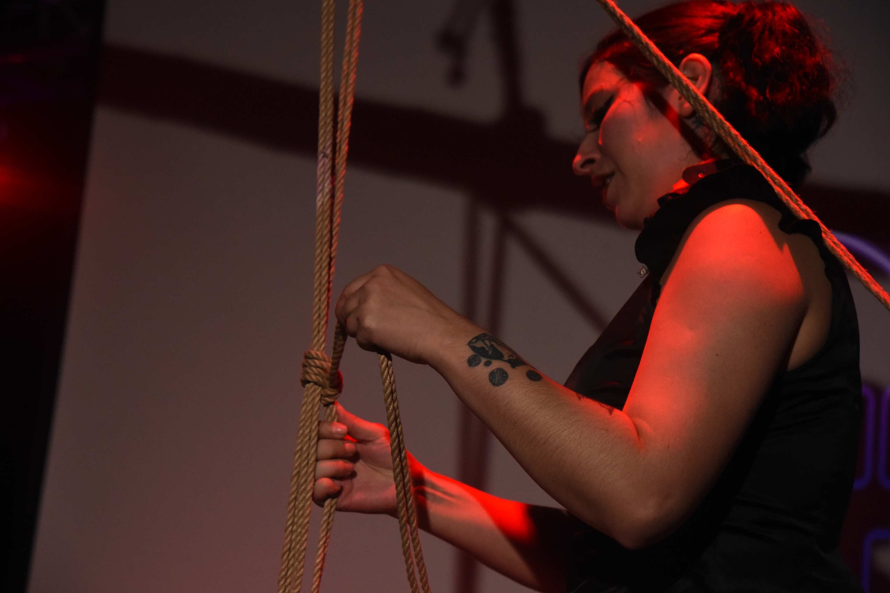

Bio - Kitsune

Quién soy
Instructora de Shibari, fotógrafa y creadora de espacios. Mi trabajo habita en la intersección entre la disciplina técnica japonesa y la exploración contemporánea del cuerpo, el vínculo y la imagen.
Trayectoria
Inicio de formación en Shibari tradicional.
Apertura de espacio propio. Inicio dictado de talleres y clases regulares.
Comienzo de especialización en Seikubaku, biomecánica y neurociencia aplicada a la práctica del Shibari.
Certificación de Sekibaku por Shibari Dojo con Señor Interior. Bogotá, Colombia.
Publicación del libro "El cuerpo como mapa: la cosmovisión andina explicando el shibari como herramienta de autoconocimiento".
Lanzamiento de KITSUNE como plataforma integrada: Marca AylluRyu, Enseñanza, Producción y Comunidad.
Filosofía de trabajo
Seguridad
Toda práctica parte del consentimiento informado, la comunicación clara y el conocimiento técnico riguroso del cuerpo.
Presencia
La atadura como meditación. El tiempo suspendido en la tensión de la cuerda como espacio de encuentro.
Comunidad
El aprendizaje no es individual. Crear redes de apoyo, intercambio y cuidado mutuo entre practicantes.
Formación y maestros
- Estudio intensivo con Señor Interior, Bogotá, 2025
- Profesorado en disciplinas acrobáticas, Buenos Aires, 2025
- Certificación en primeros auxilios y seguridad en prácticas de riesgo, 2022
- Formación en fotografía, edición y diseño gráfico, Da Vinci, 2019
Actualidad
Actualmente coordino clases regulares tanto individuales como grupales, mentorías personalizadas, talleres y producciones fotográficas. A través de Patreon comparto material didáctico, organizo cine-debates y construyo una comunidad de aprendizaje continuo.
También ofrezco sesiones privadas de Shibari como experiencia, documentación fotográfica de performances y producción de contenido audiovisual.